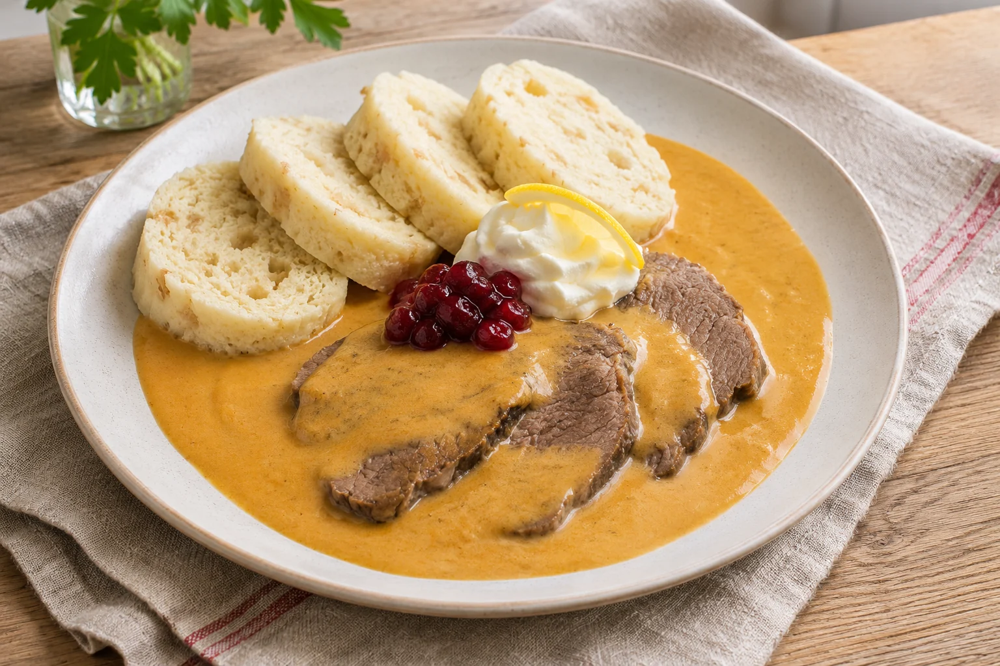

VAŠE KUCHYNĚ. NAŠE KOMUNITA.Dobré jídlo začíná
Dobré jídlo začíná
dobrým nápadem.
Najděte inspiraci na dnešní oběd, podělte se o svůj recept a suroviny přidejte rovnou do nákupního seznamu.
✓ Recepty od lidí✓ Suroviny do seznamu

NEDĚLNÍ INSPIRACEČeská klasika, která spojujeSvíčková na smetaně4 porce · přibližně 180 minut ↗
NĚCO DOBRÉHO PRO KAŽDÝ DEN
Co dnes uvaříte?
Ten váš oblíbený tu ještě chybí.
Rodinný poklad, rychlá večeře nebo víkendový dezert. Pošlete svůj recept dál.